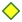

<!doctype html>
<html lang="en">
    <head>
        <meta charset="utf-8">
        <meta http-equiv="X-UA-Compatible" content="IE=edge">
        <meta name="viewport" content="initial-scale=1,user-scalable=no,maximum-scale=1,width=device-width">
        <meta name="mobile-web-app-capable" content="yes">
        <meta name="apple-mobile-web-app-capable" content="yes">
        <link rel="stylesheet" href="css/leaflet.css">
        <link rel="stylesheet" href="css/qgis2web.css"><link rel="stylesheet" href="css/fontawesome-all.min.css">
        <link rel="stylesheet" href="css/leaflet-search.css">
        <link rel="stylesheet" href="css/leaflet-control-geocoder.Geocoder.css">
        <link rel="stylesheet" href="css/leaflet-measure.css">
        <style>
        html, body, #map {
            width: 100%;
            height: 100%;
            padding: 0;
            margin: 0;
        }
        </style>
        <title></title>
    </head>
    <body>
        <div id="map">
        </div>
        <script src="js/qgis2web_expressions.js"></script>
        <script src="js/leaflet.js"></script>
        <script src="js/leaflet.rotatedMarker.js"></script>
        <script src="js/leaflet.pattern.js"></script>
        <script src="js/leaflet-hash.js"></script>
        <script src="js/Autolinker.min.js"></script>
        <script src="js/rbush.min.js"></script>
        <script src="js/labelgun.min.js"></script>
        <script src="js/labels.js"></script>
        <script src="js/leaflet.wms.js"></script>
        <script src="js/leaflet-control-geocoder.Geocoder.js"></script>
        <script src="js/leaflet-measure.js"></script>
        <script src="js/leaflet-search.js"></script>
        <script src="data/webcams_capa_1.js"></script>
        <script>
        var map = L.map('map', {
            zoomControl:true, maxZoom:28, minZoom:1
        }).fitBounds([[36.796838438414966,-7.475226953260041],[44.60306227621143,-3.655497893259941]]);
        var hash = new L.Hash(map);
        map.attributionControl.setPrefix('<a href="https://github.com/tomchadwin/qgis2web" target="_blank">qgis2web</a> &middot; <a href="https://leafletjs.com" title="A JS library for interactive maps">Leaflet</a> &middot; <a href="https://qgis.org">QGIS</a>');
        var autolinker = new Autolinker({truncate: {length: 30, location: 'smart'}});
        var measureControl = new L.Control.Measure({
            position: 'topleft',
            primaryLengthUnit: 'meters',
            secondaryLengthUnit: 'kilometers',
            primaryAreaUnit: 'sqmeters',
            secondaryAreaUnit: 'hectares'
        });
        measureControl.addTo(map);
        document.getElementsByClassName('leaflet-control-measure-toggle')[0]
        .innerHTML = '';
        document.getElementsByClassName('leaflet-control-measure-toggle')[0]
        .className += ' fas fa-ruler';
        var bounds_group = new L.featureGroup([]);
        function setBounds() {
        }
        map.createPane('pane_MapasrasterdelIGN_0');
        map.getPane('pane_MapasrasterdelIGN_0').style.zIndex = 400;
        var layer_MapasrasterdelIGN_0 = L.WMS.layer("http://www.ign.es/wms-inspire/mapa-raster", "mtn_rasterizado", {
            pane: 'pane_MapasrasterdelIGN_0',
            format: 'image/png',
            uppercase: true,
            transparent: true,
            continuousWorld : true,
            tiled: true,
            info_format: 'text/html',
            opacity: 1,
            identify: false,
            attribution: '',
        });
        map.addLayer(layer_MapasrasterdelIGN_0);
        function pop_webcams_capa_1(feature, layer) {
            var popupContent = '<table>\
                    <tr>\
                        <td colspan="2"><strong>Webcam</strong><br />' + (feature.properties['Webcam'] !== null ? autolinker.link(feature.properties['Webcam'].toLocaleString()) : '') + '</td>\
                    </tr>\
                    <tr>\
                        <td colspan="2">' + (feature.properties['Longitud'] !== null ? autolinker.link(feature.properties['Longitud'].toLocaleString()) : '') + '</td>\
                    </tr>\
                    <tr>\
                        <td colspan="2">' + (feature.properties['Latitud'] !== null ? autolinker.link(feature.properties['Latitud'].toLocaleString()) : '') + '</td>\
                    </tr>\
                    <tr>\
                        <th scope="row">Webcam_dis</th>\
                        <td>' + (feature.properties['Webcam_dis'] !== null ? autolinker.link(feature.properties['Webcam_dis'].toLocaleString()) : '') + '</td>\
                    </tr>\
                    <tr>\
                        <td colspan="2"><strong>Completada</strong><br />' + (feature.properties['Completada'] !== null ? autolinker.link(feature.properties['Completada'].toLocaleString()) : '') + '</td>\
                    </tr>\
                    <tr>\
                        <th scope="row">Titularida</th>\
                        <td>' + (feature.properties['Titularida'] !== null ? autolinker.link(feature.properties['Titularida'].toLocaleString()) : '') + '</td>\
                    </tr>\
                    <tr>\
                        <th scope="row">Municipio</th>\
                        <td>' + (feature.properties['Municipio'] !== null ? autolinker.link(feature.properties['Municipio'].toLocaleString()) : '') + '</td>\
                    </tr>\
                    <tr>\
                        <th scope="row">Provincia</th>\
                        <td>' + (feature.properties['Provincia'] !== null ? autolinker.link(feature.properties['Provincia'].toLocaleString()) : '') + '</td>\
                    </tr>\
                    <tr>\
                        <th scope="row">Altitud</th>\
                        <td>' + (feature.properties['Altitud'] !== null ? autolinker.link(feature.properties['Altitud'].toLocaleString()) : '') + '</td>\
                    </tr>\
                    <tr>\
                        <th scope="row">Localizaci</th>\
                        <td>' + (feature.properties['Localizaci'] !== null ? autolinker.link(feature.properties['Localizaci'].toLocaleString()) : '') + '</td>\
                    </tr>\
                    <tr>\
                        <td colspan="2"><strong>Estación</strong><br />' + (feature.properties['Estación'] !== null ? autolinker.link(feature.properties['Estación'].toLocaleString()) : '') + '</td>\
                    </tr>\
                    <tr>\
                        <th scope="row">Vista_suel</th>\
                        <td>' + (feature.properties['Vista_suel'] !== null ? autolinker.link(feature.properties['Vista_suel'].toLocaleString()) : '') + '</td>\
                    </tr>\
                    <tr>\
                        <th scope="row">URL</th>\
                        <td>' + (feature.properties['URL'] !== null ? autolinker.link(feature.properties['URL'].toLocaleString()) : '') + '</td>\
                    </tr>\
                </table>';
            layer.bindPopup(popupContent, {maxHeight: 400});
        }

        function style_webcams_capa_1_0(feature) {
            switch(String(feature.properties['Completada'])) {
                case 'Datos manuales':
                    return {
                pane: 'pane_webcams_capa_1',
                shape: 'diamond',
                radius: 8.8,
                opacity: 1,
                color: 'rgba(50,87,128,1.0)',
                dashArray: '',
                lineCap: 'butt',
                lineJoin: 'miter',
                weight: 2.0,
                fill: true,
                fillOpacity: 1,
                fillColor: 'rgba(72,123,182,1.0)',
                interactive: true,
            }
                    break;
                case 'Mediciones tomadas':
                    return {
                pane: 'pane_webcams_capa_1',
                shape: 'diamond',
                radius: 8.8,
                opacity: 1,
                color: 'rgba(61,128,53,1.0)',
                dashArray: '',
                lineCap: 'butt',
                lineJoin: 'miter',
                weight: 2.0,
                fill: true,
                fillOpacity: 1,
                fillColor: 'rgba(255,255,29,1.0)',
                interactive: true,
            }
                    break;
                case 'No':
                    return {
                pane: 'pane_webcams_capa_1',
                radius: 4.0,
                opacity: 1,
                color: 'rgba(35,35,35,1.0)',
                dashArray: '',
                lineCap: 'butt',
                lineJoin: 'miter',
                weight: 1,
                fill: true,
                fillOpacity: 1,
                fillColor: 'rgba(215,25,28,1.0)',
                interactive: true,
            }
                    break;
                case 'Pendiente instalar':
                    return {
                pane: 'pane_webcams_capa_1',
                shape: 'diamond',
                radius: 8.8,
                opacity: 1,
                color: 'rgba(128,17,25,1.0)',
                dashArray: '',
                lineCap: 'butt',
                lineJoin: 'miter',
                weight: 2.0,
                fill: true,
                fillOpacity: 1,
                fillColor: 'rgba(255,138,20,1.0)',
                interactive: true,
            }
                    break;
                case 'Pendiente instalar WiFi':
                    return {
                pane: 'pane_webcams_capa_1',
                shape: 'diamond',
                radius: 8.8,
                opacity: 1,
                color: 'rgba(128,17,25,1.0)',
                dashArray: '',
                lineCap: 'butt',
                lineJoin: 'miter',
                weight: 2.0,
                fill: true,
                fillOpacity: 1,
                fillColor: 'rgba(255,138,20,1.0)',
                interactive: true,
            }
                    break;
                case 'Pendiente Webcam publica':
                    return {
                pane: 'pane_webcams_capa_1',
                shape: 'diamond',
                radius: 8.8,
                opacity: 1,
                color: 'rgba(128,17,25,1.0)',
                dashArray: '',
                lineCap: 'butt',
                lineJoin: 'miter',
                weight: 2.0,
                fill: true,
                fillOpacity: 1,
                fillColor: 'rgba(255,138,20,1.0)',
                interactive: true,
            }
                    break;
                case 'Si':
                    return {
                pane: 'pane_webcams_capa_1',
                shape: 'diamond',
                radius: 8.8,
                opacity: 1,
                color: 'rgba(61,128,53,1.0)',
                dashArray: '',
                lineCap: 'butt',
                lineJoin: 'miter',
                weight: 2.0,
                fill: true,
                fillOpacity: 1,
                fillColor: 'rgba(84,176,74,1.0)',
                interactive: true,
            }
                    break;
                default:
                    return {
                pane: 'pane_webcams_capa_1',
                radius: 4.0,
                opacity: 1,
                color: 'rgba(35,35,35,1.0)',
                dashArray: '',
                lineCap: 'butt',
                lineJoin: 'miter',
                weight: 1,
                fill: true,
                fillOpacity: 1,
                fillColor: 'rgba(74,88,200,1.0)',
                interactive: true,
            }
                    break;
            }
        }
        map.createPane('pane_webcams_capa_1');
        map.getPane('pane_webcams_capa_1').style.zIndex = 401;
        map.getPane('pane_webcams_capa_1').style['mix-blend-mode'] = 'normal';
        var layer_webcams_capa_1 = new L.geoJson(json_webcams_capa_1, {
            attribution: '',
            interactive: true,
            dataVar: 'json_webcams_capa_1',
            layerName: 'layer_webcams_capa_1',
            pane: 'pane_webcams_capa_1',
            onEachFeature: pop_webcams_capa_1,
            pointToLayer: function (feature, latlng) {
                var context = {
                    feature: feature,
                    variables: {}
                };
                return L.circleMarker(latlng, style_webcams_capa_1_0(feature));
            },
        });
        bounds_group.addLayer(layer_webcams_capa_1);
        map.addLayer(layer_webcams_capa_1);
        var osmGeocoder = new L.Control.Geocoder({
            collapsed: true,
            position: 'topleft',
            text: 'Search',
            title: 'Testing'
        }).addTo(map);
        document.getElementsByClassName('leaflet-control-geocoder-icon')[0]
        .className += ' fa fa-search';
        document.getElementsByClassName('leaflet-control-geocoder-icon')[0]
        .title += 'Search for a place';
        var baseMaps = {};
        L.control.layers(baseMaps,{'webcams_capa<br /><table><tr><td style="text-align: center;"></td><td>Datos manuales</td></tr><tr><td style="text-align: center;"></td><td>Mediciones tomadas</td></tr><tr><td style="text-align: center;"></td><td>No</td></tr><tr><td style="text-align: center;"></td><td>Pendiente instalar</td></tr><tr><td style="text-align: center;"></td><td>Pendiente instalar WiFi</td></tr><tr><td style="text-align: center;"></td><td>Pendiente Webcam publica</td></tr><tr><td style="text-align: center;"></td><td>Si</td></tr><tr><td style="text-align: center;"></td><td></td></tr></table>': layer_webcams_capa_1,"Mapas raster del IGN": layer_MapasrasterdelIGN_0,},{collapsed:false}).addTo(map);
        setBounds();
        map.addControl(new L.Control.Search({
            layer: layer_webcams_capa_1,
            initial: false,
            hideMarkerOnCollapse: true,
            propertyName: 'URL'}));
        document.getElementsByClassName('search-button')[0].className +=
         ' fa fa-binoculars';
        </script>
    </body>
</html>
